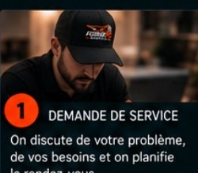
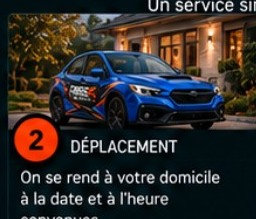
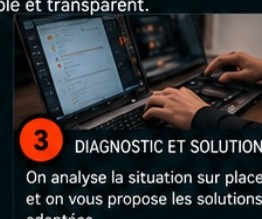
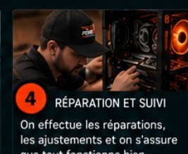

Service à domicile
Votre expert informatique
se déplace chez vous
Un service rapide, professionnel et personnalisé, directement à votre domicile.
Le service ForgePC,
maintenant chez vous.
maintenant chez vous.
Particuliers
et familles
et familles
Service rapide
et fiable
et fiable
Shawinigan et
toute la Mauricie
toute la Mauricie
Comment ça fonctionne ?
Un processus simple et transparent.

1
Demande de service
⌄On discute de votre problème, de vos besoins et on planifie le rendez-vous.

2
Déplacement
⌄On se rend à votre domicile à la date et à l’heure convenues.

3
Diagnostic et solution
⌄On analyse la situation sur place et on vous propose les solutions adaptées.

4
Réparation et suivi
⌄On effectue les réparations, les ajustements et on s’assure que tout fonctionne bien.
Foire aux questions (FAQ)
Dans quelles villes offrez-vous le service ?
Le service vise Shawinigan et différents secteurs de la Mauricie selon le déplacement.
Quels sont vos tarifs de déplacement ?
Le tarif dépend du secteur; il est confirmé avant le rendez-vous.
Combien coûte un diagnostic ?
Le coût varie selon le problème et le type d’intervention.
Combien de temps dure une intervention ?
La durée dépend du problème et des travaux nécessaires.
Quels types de problèmes pouvez-vous résoudre ?
Diagnostic, configuration, mises à niveau, logiciels, réseau et plusieurs problèmes courants.
Installez-vous des imprimantes ?
Oui, selon le modèle et la configuration de votre réseau.
Pouvez-vous récupérer mes données ?
Oui, lorsque la récupération est techniquement possible.
Offrez-vous une garantie sur le service ?
Les conditions applicables sont précisées selon le travail effectué.
Que faire si je ne suis pas satisfait ?
Communiquez avec nous afin qu’on puisse examiner la situation.
Comment prendre rendez-vous ?
Utilisez le bouton de réservation ou la page Contact.
Un problème informatique à la maison ?